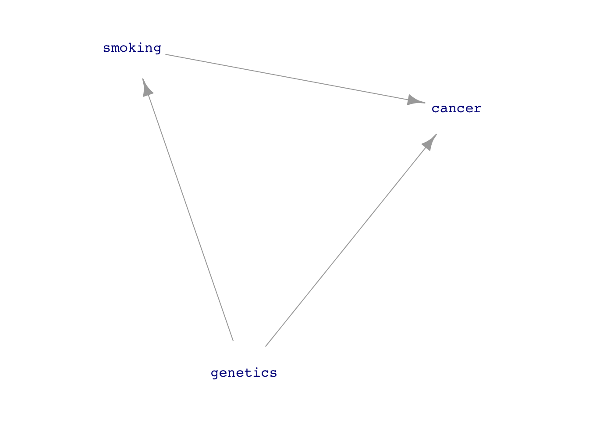
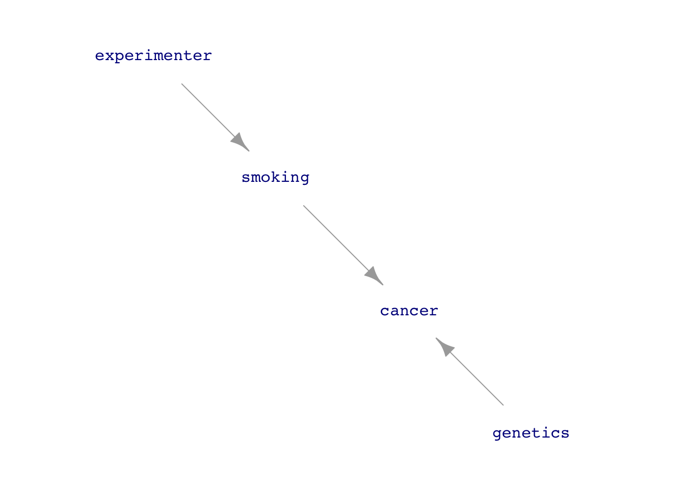
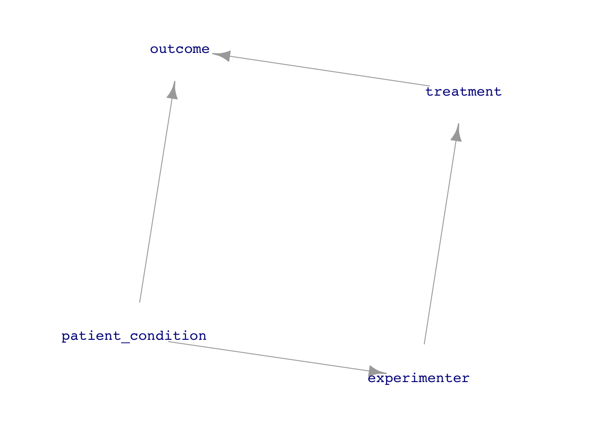

The topic of the last four lessons was using the technology of “multiple regression” in order to make accurate models of a supposed causal connection between variables, for instance A\(\longrightarrow\)B. This involved two phases:
Using covariates along with B and A in order to adjust for other factors that might make the effect size estimated from B ~ A misleading. For us in Math 300Z, this has been presented as a matter of including the relevant covariates among the explanatory variables. There are more sophisticated techniques (such as “structural equation modeling” and Bayesian estimation of “latent variables”) but the multiple regression technique is powerful and so common in professional work that it might be considered the mother of all other techniques.
Expressing our “beliefs” about the network of causal relationships that ties the covariates to A and B in the form of a DAG. Analysis of pathways between A and B in the DAG reveals which covariates ought to be included and which excluded from our model. When our beliefs are uncertain, it can be helpful to construct multiple plausible DAGs and examine whether the proper choice of covariates is robust across the range of plausible DAGs. Often, it will not be robust, a situation calling for re-assessment and consideration of whether there are additional variables that might be included to avoid the ambiguity.
Multiple regression with the use of covariates and DAGs is a powerful technique and often produces results that decision-makers can rely on. Every modeler should have it among her tools. It is not, however, all-powerful and there are situations where it should be supplemented by other techniques, especially in situations where those techniques can be easily applied.
Limits to the multiple-regression/covariate approach
There may be influential factors that are not or cannot be measured. Without measuring such factors, it’s impossible to use them as covariates.
There can be factors that have not been recognized as such. These are sometimes called “lurking variables.”
DAGs are always hypotheses; they represent our beliefs. Our beliefs may not align well with reality. There are some data-analysis techniques that can help to establish the plausibility of a proposed DAG, but ultimately they should be treated as unconfirmed hypotheses.
There can be irreconcilable differences in beliefs about causal connections and data-analysis techniques cannot always resolve these.
Regression techniques provide no guarantee that they capture the functional form of relationships. We don’t address this issue in Math 300Z so the vocabulary of unhard-to-capture functional forms will be unfamiliar, but as background information we’ll name some: threshold effects, interactions, nonlinearities, non-normality, multi-collinearity, and heteroscedasticity.
Experiment
An experiment is an intervention intended to simplify the system under study to reduce ambiguity in conclusions.
We will focus on conclusions of the form B ~ A, but in many practical applications there is a set of explanatory variables of interest, as in B ~ A1 * A2 * A3. For instance, an agriculture experiment might evaluate the differing yields of varieties of a crop, looking at the same time at the effects of fertilizers, watering, as well as herbicide and pesticide usage.
Factors leading to ambiguous conclusions:
noise and unwanted randomness
confounding and other forms of backdoor causal pathways
the possibility of “lurking variables”
sheer complexity of systems
Simplifying interventions
[Domain specific] Hold as constant as possible any influences that are not of direct interest. E.g. use pure reagents, keep temperature at a standard level, collect data at similar times of day, week, or year, keep pristine laboratory conditions (no food or drink, avoid dust, vibration, wear white lab coats!).
[General] If you can’t hold constant a factor that’s important to the system (e.g. weather, time), replicate the experiment across different levels of the factor. Then average or adjust at the data-analysis phase.
[Domain specific] Measure accurately and sensitively, as with calibrated instruments. Example: Michelson and Morley’s work on the effect of “aether” on the propagation of light. They made an ingenious design using interferometry that was sensitive to small differences in the speed of light in different. Millikan’s measurement of the charge of the electron through the movement of tiny oil drops.
[Of primary interest to studying causality] Intervene in the system under study to cut the explanatory variable off from any influence other than one the experimenter controls.

(a) Natural system

(b) Experimental intervention
Figure 1: Intervening to simplify the network of causal connections.
Impose variation via the experimenter\(\rightarrow\)explanatory route. Compare and contrast.
Avoid any input to explanatory other than from experimenter.

Figure 2: Letting the experimenter’s decision about treatment be influenced by the patient’s condition opens the back-door pathway from treatment to outcome.
Avoid any connection between experimenter and nodes other than explanatory.
Figure 3: A situation calling for double-blinding. There are back-door pathways from vaccination to diagnosis. Blinding eliminates the vaccination \(\longrightarrow\) risk-taking link. Double-blinding eliminates the vaccination \(\longrightarrow\) diagnosis link.
Set experimenter to be uncorrelated with any measured, unmeasured, or unknown factor.
Ways that (e) gets violated
Subjects don’t comply with their assigned treatment, e.g. drug/placebo.
Subjects react differently based on their treatment. Example: drivers with anti-lock brakes tended to raise the threshold of bad conditions in which they would drive. Partial solution: make the patient blind to the treatment.
Assignment of treatment is based (in part or in whole) on some assessment of the subject. Example: doctor assigns surgery to those patients who are in the best condition to survive it.
Ways to implement (g)
Measured covariates: Use blocking.
Unmeasured or unknown: Random assignment.
Both: Random assignment within blocking.
Demonstration: Random assignment
Confounding with some lurking variable. If we could measure it, we could use adjustment to get the correct relationship between group and outcome.
A major feature of agricultural experiments is that the fertility of soil varies from place to place, and can vary differently according to the year because of the weather, exhaustion of nutrients, and so on.
The Wheat data frame contains measurements of the yield of several varieties of winter wheat. The data shows how they organized the experiment.
The field was divided into three blocks. Each variety was replicated by planting in each block, so that the effect of different block fertility would average out.
Each block was divided into many smaller areas, plots, where the fertilities might be different. Each variety was randomly assigned to a plot, separately for each block..
The comparative yields of the different varieties might vary according to the weather. We can’t hold the weather constant. Consequently, the experiment replicated across several years, so that the weather-related effects might average out.